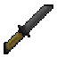
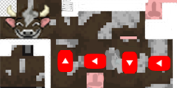
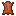
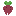
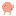
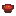

Соль, нож и редиска
Кухонный набор из четырёх предметов и трёх блоков: нож, который бьёт в спину вдвое сильнее и не отталкивает цель; солевой фитиль вместо красной пыли; редиска с грядки — и борщ, который возвращает миску. Гостевой пункт от Мистера П.

Бьёт в спину, не толкает
Железное лезвие на простой рукояти: три урона в лоб, четыре с половиной сбоку и шесть в спину. Отбрасывания нет вообще — даже с разбега. А ещё это ножницы, топор и нож для ягод.
КРАФТ

СТЕНД: ОТКУДА БЬЁШЬ
ЧЕМ ЕЩЁ ПОЛЕЗЕН
- Стрижёт овец и грибных коров — как ножницами, с уроном прочности

Стрижёт быка: обычный становится медным или лысым, лысый роняет 1–2 кожи
Быстро ломает листву, шерсть и паутину; дроп с шерсти, паутины и блока травы Собирает ягоды и вырезает тыквы, снимает кору как топор
Собирает ягоды и вырезает тыквы, снимает кору как топор
СТРИЖКА БЫКА · 50 / 50
Медный бык открывает достижение №22 «Медный бык» в родной ветке дойки. Стрижка работает только на обычном варианте быка.
Руда, фитиль и сигнал 15
Соляная руда живёт на высоте 48–128 блоков и всегда отдаёт ровно четыре соли — даже если её взорвали или снесли ультой катаны. А сама соль кладётся trails-полосой и горит, как одноразовый бикфордов шнур.
СТЕНД: СОЛЕВОЙ ФИТИЛЬ
Кликай или веди пальцем по клеткам. Факел слева поджигает соседнюю соль; дальше огонь идёт сам — по два тика на клетку, в стороны и вверх-вниз по склонам.
zitraksmode:salt_ore СОЛЬ
zitraksmode:salt
Почему дроп «ровно четыре»
Соль выпадает в onRemove — общем обработчике удаления блока, а не в таблице лута. Поэтому количество не зависит от инструмента, зачарований и того, кто именно убрал блок.
Что с поршнями
Теоретическое движение поршнем не дропает соль — проверка isMoving отсекает этот случай, а обновление состояния блока в себе самого не считается удалением.
Один раз и сгорел
Соль — источник сигнала только пока горит: 15 единиц на 2 тика, затем клетка исчезает. Из оставшейся части цепочки можно поджечь следующую схему.
Восемь стадий до хруста
Редиска — одновременно еда и семя: съел три единицы голода или посадил на грядку — выбор твой. Пожарить можно в печи, коптильне и на костре: сто тиков, десятая доля опыта.
СТЕНД: ГРЯДКА
Спелая грядка подсвечена красным. Первая редиска уже в кармане — посадить можно сразу. Костная мука прыгает через стадию, тики — честные случайные.
Семь клеток — одна порция
Свёкла, редиска и картофель в верхнем ряду; морковь, соль и курица в среднем; миска внизу. Одна порция на десять голода — и миска возвращается после еды.
КРАФТ




1 × БОРЩСТЕНД: ОБЕД
Забери борщ из верстака — и попробуй: десяток голода одной порцией, миска честно возвращается.
СТЕНД: ПАМЯТЬ РЕЦЕПТОВ
Ванильные ачивки рецептов знают только текущий инвентарь. Гостевой обработчик помнит «когда-либо держал» — и разжигает рецепт навсегда, даже если предмет давно потрачен.
НОЖ
БОРЩ
Проверка идёт раз в секунду; учитывается и статистика подборов из старых миров. Достаточно любого из трёх ингредиентов борща.
Ветка Мистера П в древе
Цепочка целей гостевого пункта: подлый удар, медный бык, солевой шнур, урожай и обед. Получаются действиями на стендах, показываются в общем древе достижений и засчитываются в опыт профиля.